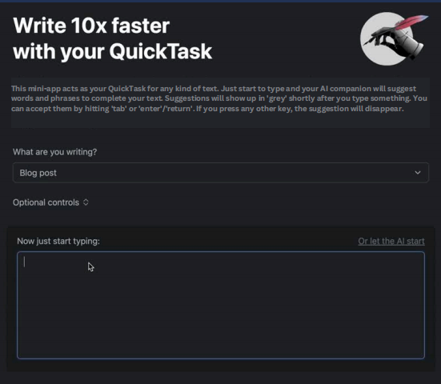
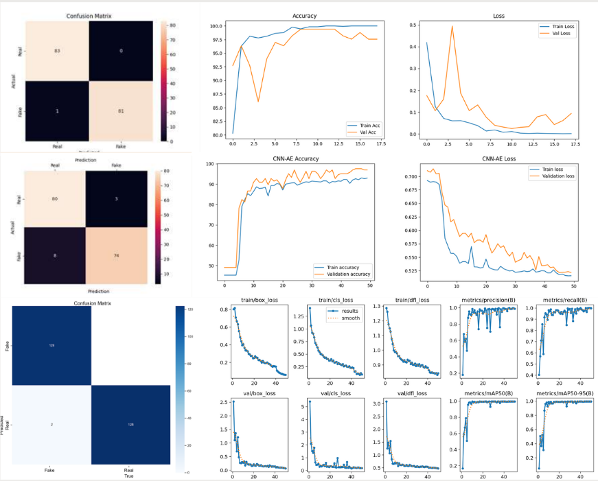

I am a programming enthusiast who loves debugging and understanding logic. Experienced in software, AI integration, and Unity 2D games, with interests in machine learning research and hardware projects.
Job-matching website with advanced categorization. Built responsive UI and back-end features.
Bullet-hell 2D game (Unity + C#). Implemented shooting, enemy spawning, and bullet patterns.
AI-powered writing assistant using NLP for word and phrase suggestions. Built front-end and AI integration.
AI chatbot app helping the elderly use WhatsApp via speech-to-text and text-to-speech. Integrated Gemini AI API for voice conversation.
Compared EGACNN and CNN-AE models for detecting forged signatures to aid fraud prevention.
